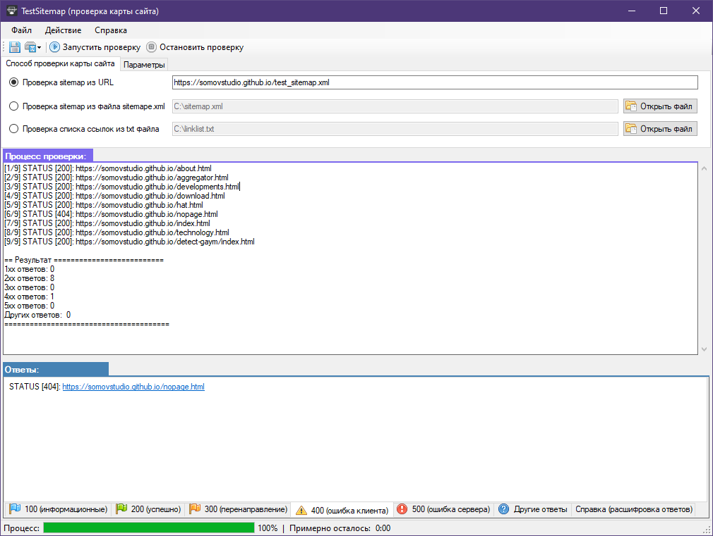
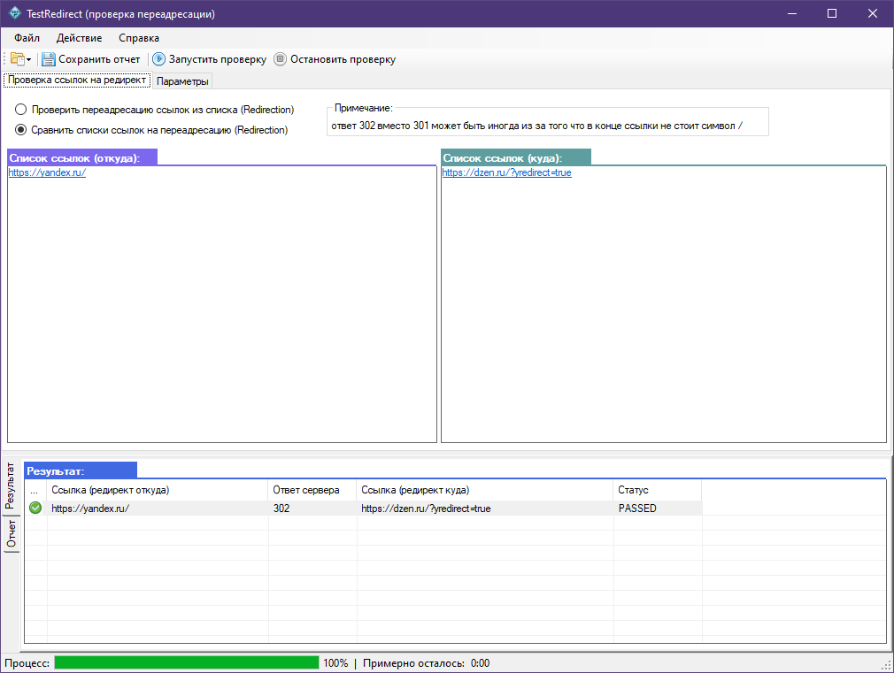
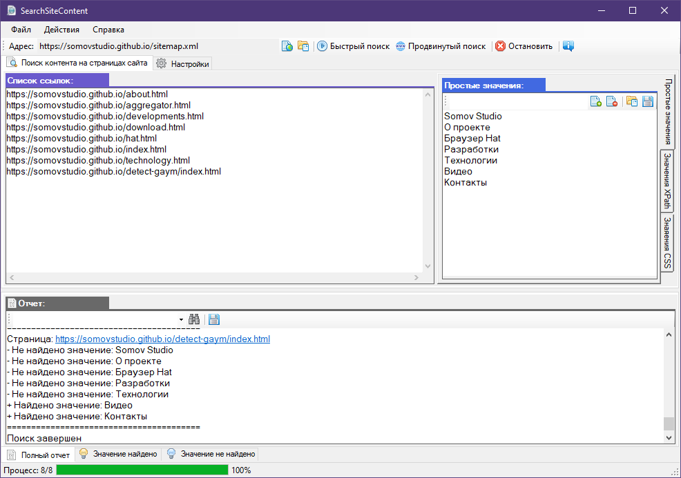

Разработки
Разработка программ при поддержке компании "Зионек".
Компания занимается разработкой "Интернет-магазинов", "Корпоративных порталов", "CRM-систем" и собственных решений. https://zionec.ru
В рамках данного проекты было разработано программное обеспечение которое предназначено для упрощения выполнения задач в области тестирования.
Все программы распространяются абсолютно бесплатное.
Компания занимается разработкой "Интернет-магазинов", "Корпоративных порталов", "CRM-систем" и собственных решений. https://zionec.ru
В рамках данного проекты было разработано программное обеспечение которое предназначено для упрощения выполнения задач в области тестирования.
Все программы распространяются абсолютно бесплатное.
Браузер: "Hat"

Особенность браузера Hat в том что автотесты напрямую выполняются в браузере без Selenium и WebDriver.
Встроенный фреймворк HatFramework содержит достаточное количество методов необходимых для выполнения основных задач автоматизации тестирования.
Для описания скриптов автотестов используется язык программирования C# и встроенный редактор кода. Так же в качестве редактора можно воспользоваться Visual Studio.
Удобный интерфейс браузера отображает все шаги выполнения теста с подробным описанием событий.
Результат проверки формируется в отчет и отправляются на указаную почту.
Запуск автотестов возможен из командной строки операционной системы Windows это пригодится при использовании автотестов в популярных средствах непрерывной интеграции таких как: Jenkins, TeamCity, GitLab CI/CD.
Плагин HatPluginMySql для браузера Hat который позволяет выполнять автоматизированное тестирование данных в базе данных MySql
Системные требования: Windows 8, 10, 11 (.Net Framework 4.8) и пакет Microsoft Edge WebView2
Программа: "TestSitemap"

Программа предназначена для тестирования ссылок указанных в карте сайта в файле sitemap.
Программа циклично проходит по всем ссылкам из карты сайтя и получает статус каждой страницы.
В зависимости от полученного результата ссылки распределяются по вкладкам.
Такая проверка позволяет выявить страницы статус которых 404 или 502. Все ссылки делятся на группы 100, 200, 300, 400 и 500-х ответов при их запросе.
Проводить проверку ссылок можно по указанному URL или же выбрав на локальном компьютере файл карты сайта sitemap.xml, а так же вы можете в простом текстовом файле составить список ссылок и выбрать его для проверки.
Архив программы "TestSitemap" (версия 2.1)
Программа "TestSitemap" на GitFlic
Системные требования: Windows 8, 10, 11 (.Net Framework 4.8)
Программа: "TestRedirect"

Программа для тестирования переадресации (редиректа) ссылок.
Кроме проверки присутствия переадресации указанных ссылок, программа так же позволяет выполнять сравнение ожидаемого результат переадресации с фактическим результатом.
В результате проверки вам будет доступер полный или частичный отчет, отчет исключительно с ошибочными редиректами.
Архив программы "TestRedirect" (версия 2.1)
Программа "TestRedirect" на GitFlic
Системные требования: Windows 8, 10, 11 (.Net Framework 4.8)
Программа: "SearchSiteContent"

Программа для поиска контента на страницах сайта. В качестве списка страниц сайта берется sitemap.
Поиск выполняется по указанному списку значений.
Для быстрого поиска используются простые текстовые значения.
Для продвинутого поиска используется оболочка WebView2 (Edge) и значения указываются в формате XPATH или CSS локаторов.
В результате вы получите несколько отчетов, один из которых общий по всему процессу поиска значений
и два отдельных отчета по найденым и не найденым значениям на указанных страницах.
Архив программы "SearchSiteContent" (версия 2.3)
Программа "SearchSiteContent" на GitFlic
Системные требования: Windows 8, 10, 11 (.Net Framework 4.8) и пакет Microsoft Edge WebView2
Программа: "SEOScanner"
Программа сканирования web страниц для проведения SEO-аудита.
Архив программы "SEOScanner" (версия 1.4)
Программа "SEOScanner" на GitFlic
Системные требования: Windows 8, 10, 11 (.Net Framework 4.8)
Программа: "DetectGaYm"

Программа DetectGaYm позволяет проверить события Google analytics и Yandex metrika в момент отправки данных из web форм. Для создания автотестов в json формате встроен удобном редакторе который так же позволяет легко их воспроизводить. Программа портативная и кроссплатформенная.
Архив программы "DetectGaYm"
Программа "DetectGaYm" на GitHub
Официальная страница с документацией
Видеоурок: Инструкция по использованию программы
Системные требования: Windows 7, 8, 10 (.Net Framework 3.5)
или Linux (Ubuntu, Mint и др.) я так же JDK 8 (Java SE Development Kit 8)
Программа: "FastADB"
Программа FastADB позволяет работать с Android Debug Bridge более удобно и быстрее. С помощью этой программы вы легко сможете снимать логи и скриншоты с устройства, устанавливать и удалять приложения, производить стресс-тестирование, и многое другое.
Архив программы "FastADB"
Программа "FastADB" на GitHub
Системные требования: Windows 7, 8, 10 (.Net Framework 2.0), Android Studio (Android SDK)